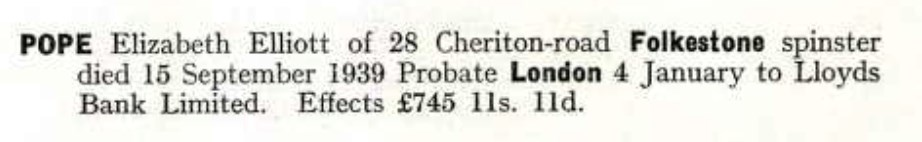
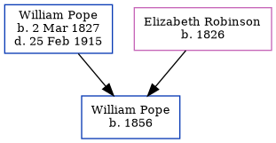

Elizabeth Elliott Pope cNov 1853 - 1939
[ Home ] | [ Calendar ] | [ Surnames Index ] | [ Census Index ] | [ Family History ]A companion and the child of William Pope (a builder) and Elizabeth Robinson, Elizabeth Pope, the second cousin three-times-removed on the father's side of Nigel Horne, was born in Folkestone, Kent, England c. Nov 18531,2,3 and baptized there at Ss Mary & Eanswith Church on Jan 6, 1854.
During her life, she was living on Mill Lane in Folkestone on Apr 7, 18611; at 16 Church Street in Folkestone on Apr 3, 18816; and at 28 Cheriton Road in Folkestone in 1939.
She died on Sep 15, 1939 in Elham, Kent, England3,4,5 and was buried at Cheriton Road Cemetery in Folkestone on Sep 18, 1939.
Parents
- William was born on Mar 2, 1827
- Elizabeth Ann was born in 1826
Citations
- 1861 England, Wales & Scotland Census - Findmypast (was age 7 and the daughter of the head of the household)
- England & Wales births 1837-2006 - Findmypast
- England & Wales deaths 1837-2007 - Findmypast
- England & Wales Government Probate Death Index 1858-2019 - Findmypast
- Kent, Folkestone Cheriton Road Cemetery Memorial Inscriptions - Findmypast
- 1881 England, Wales & Scotland Census - Findmypast (was age 27 and a boarder in the household)
Media
Folkestone, Hythe, Sandgate & Cheriton Herald - 30 Sep 1939

Elizabeth Pope - probate

Kent Baptisms - GBPRS/CANT/B/96149895
England & Wales births 1837-2006 - BMD/B/1853/4/AZ/000790/058
England Births & Baptisms 1538-1975 - R_885248009
England Births & Baptisms 1538-1975 - R_938162410
Kent, Folkestone Cheriton Road Cemetery memorial inscriptions - GBPRS/KENT/MIS00007256
England & Wales deaths 1837-2007 - BMD/D/1939/3/AZ/000671/039
1881 England, Wales & Scotland Census - GBC/1881/0004945733
Family Tree
Generated by ged2site. Last updated on Jun 11, 2024